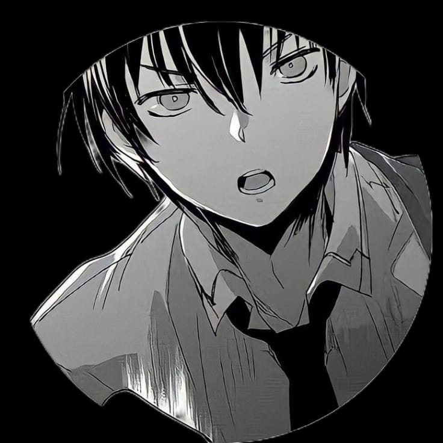
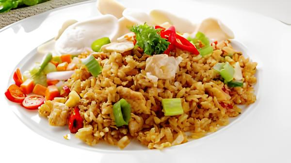

Ini adalah website perkenalan yang saya buat menggunakan bahasa pemrograman html, css, dan javascript

Untuk makanan favorit saya sendiri adalah nasi goreng, karena rasanya yang lezat dicampur dengan sayur-sayuran,apalagi kalau ada telur dan kerupuk🤤
Lagu favorit saya adalah Sell Out by basco, karena saya menyukai nada nya yang membuat semangat
Hobi saya adalah membaca dan bermain game
Tokoh favorit saya adalah Sora dari anime berjudul no game no life.Alasan mengapa saya mengagumi karakter tersebut dikarenakan pemikirannya yang sangat saya sukai, salah satu contohnya yaitu dia dapat menyelesaikan berbagai masalah dengan kepala dingin